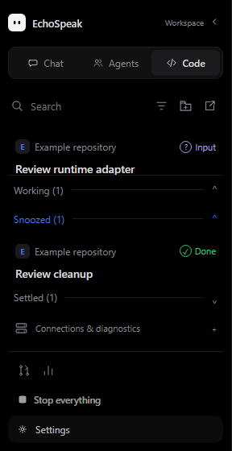
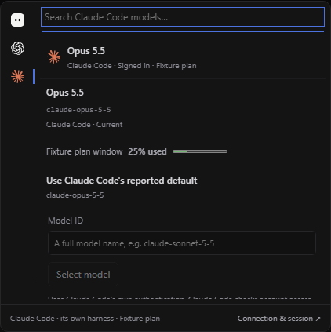
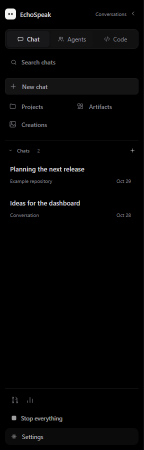
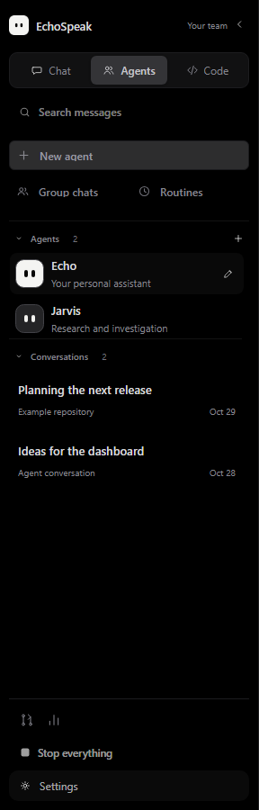
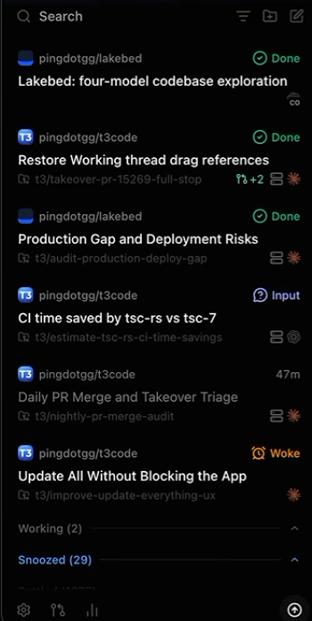

EchoSpeak / Code workflow
30 October 2026 UTC · 11.13.0 · PR #114, stacked on #113 · fresh local runtime EXE/MSI · unsigned · not installed or publicly released
A left-side inbox for parallel work. Open the threads that need you; park the rest.
Implemented: flat project-labeled rows, a Working shelf, timed snooze, bulk selection, native background send and prompt/image stashes. Local OpenAI and Claude marks replace the broken runtime monograms.
Current runtime build: fresh backend, frontend and Windows EXE/MSI built successfully (exit 0). Retained under release/v11.13.0/runtime-reliability/. Both report 11.13.0; these are unsigned local test installers, not installed or publicly released. Earlier candidate hashes remain historical.
Actual runtime models. Clear limits. Lists that open upward.


Codex · live file task passed
Existing sign-in, eight reported models, isolated read/write, checked file contents, and stop/reconnect with the same native identity and model.
Claude · weekly limit observed
Existing sign-in and twelve resolved models, including Opus 5.5. One Haiku task was rejected at the account limit. Reconnection passed; live file execution remains unverified.
Native · local and API
Configured local/API endpoints share Lean's engineering path. Coding subscriptions retain the vendor's harness, authentication, permissions and session behavior.
The reported plain folders have no Git repository. External isolation needs committed HEAD; admission now explains this before connecting. No project files were auto-committed. Unknown quota stays unavailable, and session tokens/costs stay separate from account allowance.
Final affected backend runs: 26/26 and 47/47; 33/33 runtime/layout and 29/29 Chat/sidebar tests, 16/16 desktop contracts, and TypeScript. Browser checks exercise 560px-high shelves and 390px width. UI screenshots use deterministic components; live provider checks used source adapters, not the installed desktop.
Chat, Agents and Code share one navigation system
A 288px sidebar gives titles room to breathe. A shared identity header and icon tabs anchor the workspace; search, quieter page shortcuts and utility actions stay in predictable places. Code filters open on demand. Chat rows show actual project/date context; Agents use consistent avatars and the latest message or configured role.



Dark/light themes, search, navigation, agent opening, keyboard filter toggle, Working visibility, 288px sizing, collapsed 56px rail and existing inbox interactions were exercised in the browser. These are component fixtures, not installed-app screenshots.
This is the left Code sidebar

Focus on Input and Review
Pending approvals and failed checks stay visible. Working, Snoozed and Settled fold below the active list. Choose whether Working gets its own shelf.
Move several threads together
Ctrl/Cmd-click selects; Shift-click spans visible rows. Settle, wake, or snooze 15 minutes, one hour or one day. Stale actions report failures.
Keep your draft
Ctrl/Cmd+S stashes the native prompt and up to four images. Ctrl/Cmd+Enter submits native work in the background through the existing harness.
Snooze expiry only changes the inbox. It never executes a task. Settling a failed check never changes its verification evidence. Native sessions share the project folder, so simultaneous native writers are refused; vendor worktrees retain their existing isolation.
The reference and Echo's adaptation


Source reviewed at T3 commit cba30591f95859bc76154e5be97891ea4ae1b85a. Concepts are adapted to Echo's existing execution owners; no T3 runtime code was ported.
| Workflow | Echo implementation | Boundary |
|---|---|---|
| Inbox and parking | Flat rows, optional Working shelf, timed snooze, visible range selection | Choices bind to exact activity; live decisions take priority |
| Merged PR cleanup | Link a PR from the row menu; visible inbox periodically checks existing GitHub CLI context | Only unchanged, clean, idle Ready to review activity settles. No merge action |
| Background work and drafts | Native Ctrl/Cmd+Enter and prompt/image stashes; existing runtime send for external composers | No new scheduler; no automatic restart replay |
| Remaining parity | Bulk title regeneration, full PR/CI review and automatic PR discovery remain | Native worktree isolation and remote/mobile control are future work |
Primary sources: T3 sidebar, outside agents, usage, triage. Use Technical notes in Echo's sandboxed project preview to inspect links.
Optional MCP, with explicit access
Open MCP access & diagnostics below the Code inbox. Select projects and persistent agents; create a read-only client, or explicitly allow control. Copy its configuration into an MCP client or Echo's existing MCP connections.
Project scope is application-level authority, not an OS sandbox. The bridge accepts local clients only and refuses proxies and redirects. Remote HTTP MCP, OAuth pairing, hosted bots and mobile access are not implemented. The compiled API and stdio entry also passed disposable local checks; installed desktop acceptance remains separate.
Show what was observed
Usage and limits
The existing Usage panel now reads persisted Codex and Claude-reported token fields, scope and timestamp. Reported costs are separate from subscription bills. Missing account limits stay unavailable; no guessed remaining percentage or unrelated history scraping.
Local triage export
Save version, runtime state and CPU/memory observations from the Code sidebar. Prompts, conversations, paths, raw logs and credentials are excluded. No model call, upload or GitHub issue is created. Observations do not imply automatic machine routing.
Earlier native Code foundation: the sections below retain the model-first environment and its scripted repair example from 11.11.8. The new inbox and optional control use the existing Lean harness and selected-model policy.
Three environments
Chat
The model you picked, as itself.
- For
- Conversation, research, explanations, artifacts
- Tools
- Search and reading, live cards, artifacts, memory
- Checks
- Sources and figures checked under the answer
Code changed
The model you picked, as a coding assistant.
- For
- Repositories: read, edit, run, debug, test
- Tools
- Files, terminal, docs search, memory, skills
- Checks
- Tests and builds measured; Verified / Checks pass / Not verified under the answer
Agents
Echo and your other agents.
- For
- Ongoing responsibilities, routines, teams
- Tools
- Each agent's own, plus delegation, work and notes
- Checks
- The same ledger, plus job completion for teams
What changed in Code
| Before | Now | |
|---|---|---|
| Who answers | Echo, the agent (persona, soul) | The model you picked, named after it |
| Team and delegation | Echo's roster; could hand off to Jarvis or Glados | None: Code is one coding assistant |
| Tools | Everything Echo has: reminders, media, shopping, live cards, desktop control, agent work | Engineering tools only; small models see the essentials first |
| Prompt | Echo's personality, chart and card rules | The engineering workflow, project instructions, git status and git rules |
| A failing test in the timeline | "Running `pytest`" forever | "Ran `pytest`" · "Tests: 1 failed" |
| Learning | Counted as Echo's | Code's own record; can use Echo's proven coding lessons (measured) |
| Models | Current: configured local or API models in native Code; coding subscriptions use the independent Codex/Claude Code harnesses. This supersedes the historical local-only rule. | |
Code's workflow, as it shows up
Ran `pytest -q tests/test_dates.py`Tests: 4 passed, 1 failedWrote dates.pycheckpointedRan `pytest -q tests/test_dates.py`Tests: 5 passedThese are steps in one coding session, not messages from different agents.
Your test
Evidence and remaining acceptance
Focused native, inbox, MCP, queue, authentication, protocol, ledger and workbench regressions; 35 web tests; 16 desktop source contracts; TypeScript; production build; fixture browser checks. The technical evidence file gives exact results and commands.
Owner acceptance remains: real local-model repair, live vendor approvals/cancellation/reconnect, real project behavior and installed Tauri layout. 11.13.0 local installers were later produced; updater signing needs the existing key password locally. Historical fixture evidence only. The new reliability section above records two later live subscription attempts; installation, merge and public release remain separate.
ChatHub follow-up / 11.13.1
Codex usage now combines live notifications with a five-minute fallback and selects the latest observation. The connection panel offers Refresh limits. Failed reads preserve the last timestamp; Git provisioning failures preserve bounded diagnostics.
Installed Git failure unresolved. Compiled ChatHub provisioning and Codex auth/model/usage checks passed with disposable state and no prompts. The earlier installed window still failed. See the current 11.13.1 report for the new candidate and the exact remaining acceptance step.
Current visual report